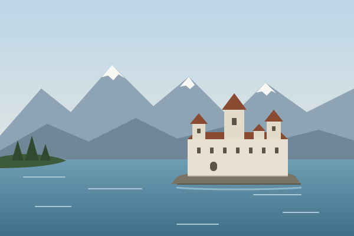

Post-mortem
1.1What happened after
Papers
Toma stayed in Reghin. He applied for an identity card at the population records office in the town, and for a passport at the passport office in Târgu Mureș, where he returned the travel document from Bern. Both were ready within a month.
Friend
He contacted his close friend from Reghin, the one he used to tell almost everything, and they met regularly again. Toma told them where he had been.
Signal
He maintained regular contact with Hollis and Kellerman on Signal, as they had agreed at the camp.
Enforcement
The Foundation complied with the judgment only after the courts forced it to. The thirty days passed without a delivery, so Favre applied to the enforcement court in Geneva, which set a fine of 1,000 francs for each day of non-compliance.
Delivery
Within days the binary and the bench results reached Favre's office with a written statement of the delivered items, and the AKV-RC4 units arrived in sealed boxes, so that Favre could confirm they had not been opened in transit.
Recognition
In Târgu Mureș, the Mureș County Court declared the judgment enforceable in Romania under the Lugano Convention.
Compensation
The balance of the damages was paid in cash on the last day of the six months, in December.
Ban on contact
The Foundation and its agents respected the ban on contact.
Version 1.0
Using the binary and the bench results, Toma finished the implant together with Houston at Engrama s. r. o., starting from the fourth release candidate. Engrama released Version 1.0 as open source under the GPL before the end of the year, and it gained very little traction. After the release Toma no longer worked on the project.
Toma returned to civil life.
1.2Why Version 1.0 is not selling
Prečo sa verzia 1.0 nepredávaWhy version 1.0 is not selling
Catarzykonateľ, Engrama s. r. o.managing director, Engrama s. r. o.30. decembra 203030 December 2030
V AKV Solutions sme verili, že implantát bude revolučný. Naše heslo znelo "Keep the life. Lose the day." Začiatkom decembra sme ho spolu s Tomom, bývalým hlavným programátorom AKV, vydali ako verziu 1.0. Zatiaľ sme predali len niekoľko kusov, hlboko pod našimi očakávaniami.At AKV Solutions we believed that the implant would be revolutionary. Our slogan was "Keep the life. Lose the day." At the beginning of December we released it as version 1.0, together with Toma, the former lead programmer of AKV. So far we have sold only a few units, far below our expectations.
Čo verzia 1.0 robíWhat version 1.0 does
Implantát sa vkladá za ucho. Uchováva kópiu toho, čo používateľ označí ako dôležité: mená, tváre, rodinu, domov a prácu. Dávka amnestík potom odstráni len to, čo má, a spomienku je možné obnoviť len na žiadosť používateľa. Firmvér je otvorený pod licenciou GPL.The implant goes behind the ear. It keeps a copy of what the user marks as essential: names, faces, family, home and work. A dose of amnestics then removes only what it should, and a memory can be restored only when the user asks for it. The firmware is open under the GPL.
Zdrojový kód AKV sa stratil, keď firma zanikla. Verziu 1.0 sme preto zostavili z binárneho obrazu firmvéru a z výsledkov testov, ktoré Tomovi vrátil švajčiarsky súd, a vychádzali sme zo štvrtého kandidáta na vydanie.AKV's source code was lost when the company closed. We therefore built version 1.0 from the binary image of the firmware and from the test results that the Swiss court returned to Toma, starting from the fourth release candidate.
Čo sme čakaliWhat we expected
AKV vznikla proti zneužívaniu amnestík. Triedy A a B sú voľne dostupné a zakázať ich nie je možné, a tak sme vyvinuli zariadenie, ktoré informácie uchová, aj keď látka zasiahne neuróny. Chceli sme, aby si človek závislý od amnestík uchoval to, čo mu dávky berú, kým s nimi prestáva.AKV was founded against the abuse of amnestics. Classes A and B are freely available, and a ban is not possible, so we developed a device that keeps the information even when the substance acts on the neurons. We wanted a person addicted to amnestics to keep what the doses take while they stop taking them.
Čítali sme aj o predávkovaniach, napríklad o starších ľuďoch v Poľsku, ktorí prišli o celé desaťročia. Čakali sme, že implantát budú chcieť závislí ľudia, ich rodiny a lekári, aj pacienti, ktorí berú amnestiká na predpis.We also read about overdoses, such as older people in Poland who lost whole decades. We expected addicted people, their families and doctors, and patients who take amnestics on prescription to want the implant.
Čo sa staloWhat happened
Dostali sme veľa otázok a málo objednávok. Toto sú dôvody, ktoré nám kupujúci uvádzali najčastejšie:We received many questions and few orders. These are the reasons buyers gave us most often:
- Operácia a cena: implantát musí vložiť chirurg za ucho a s operáciou stojí oveľa viac ako balenie amnestík.Operation and price: a surgeon has to place the implant behind the ear, and with the operation it costs far more than a pack of amnestics.
- Vybratie: kupujúci sa obávajú, že implantát nepôjde vybrať. Verzia 1.0 vybratie podporuje a postup vysvetľujeme každému kupujúcemu, ktorý oň požiada.Removal: buyers fear that the implant cannot be removed. Version 1.0 supports removal, and we explain the procedure to each buyer who requests it.
- Kópie spomienok: implantát ukladá kópie spomienok na čip. Po únikoch o Nadácii SCP mnohí kupujúci nechcú mať svoje spomienky uložené mimo hlavy, pretože by mohli byť uzamknuté.Copies of memories: the implant stores copies of memories on a chip. After the leaks about the SCP Foundation, many buyers do not want their memories stored outside their head, because they could be locked up.
- Predpis: lekári, ktorí predpisujú amnestiká, nechcú zariadenie, ktorým si pacient môže obnoviť to, čo liečba odstránila.Prescriptions: doctors who prescribe amnestics do not want a device that allows a patient to restore what the treatment removed.
- Závislosť: človek závislý od amnestík ich berie, aby zabudol, a implantát uchová vymazané spomienky. Závislí používatelia si ho preto vyberajú len zriedka a ich rodiny ho za nich vybrať nemôžu.Addiction: a person addicted to amnestics takes them to forget, and the implant keeps the deleted memories. Addicted users therefore rarely choose it, and their families cannot choose it for them.
- Príležitostní používatelia: ľudia, ktorí berú amnestiká príležitostne, veria dávke uvedenej na balení a s predávkovaním nepočítajú.Occasional users: people who take amnestics occasionally trust the dose shown on the pack and do not plan for an overdose.
Čo ďalejWhat next
Implantát naďalej predávame a firmvér udržiavame. Píšeme príručku pre lekárov o vkladaní a vyberaní implantátu.We continue to sell the implant and to maintain the firmware. We are writing a guide for doctors about placing and removing the implant.
Lekári a kliniky, ktorí preň vidia využitie, nás môžu kontaktovať.Doctors and clinics who see a use for the implant can contact us.
1.3The repository on GitLab
Engrama/implant-firmware
Star4implant-firmware
mainimplant-firmwareFind fileCodeRelease v1.0Catarzy authored on Dec 2, 2030
Verified4e1a9c7History
| Name | Last commit | Last update |
|---|---|---|
| board | Redraw the board in KiCad from the bench measurements | Nov 2030 |
| coreboot | Pin the coreboot 24.08 configuration | Oct 2030 |
| docs | Document the removal procedure | Dec 2030 |
| src | Check where a delete flag came from before clearing it | Dec 2030 |
| LICENSE | Add the GPL license text | Sep 2030 |
| README.md | Release v1.0 | Dec 2030 |
README.md
implant-firmware
Firmware for the anti-amnestic memory implant first built at AKV Solutions in Linz. Version 1.0 is rebuilt from the binary image of the fourth release candidate (AKV-RC4) and from its bench test results.
What it does
- Keeps a copy of what the user marks as essential: names, faces, family, home and work.
- Recalls through cues written by the user's own brain.
- Restores a memory only when the user asks for it.
Hardware
The implant boots with coreboot 24.08 on an AArch64 core and is powered and read through an inductive coil held behind the ear. For safety, a magnetic sensor cuts the power inside an MRI scanner.
Changes since RC4
- Removal is supported through setup mode. The procedure is in
docs/removal.md. - The refresh path checks where a delete flag came from before it clears the flag.
Medical use
The implant must be placed and removed by a surgeon. Clinics should contact Engrama s. r. o. before an operation.
License
GNU General Public License. This program is distributed in the hope that it will be useful, but WITHOUT ANY WARRANTY.
1.4Hollis's notebook
Version 1.0
31 December 2030
Toma sent me the Engrama post on Signal. Only a few units were sold, far below what Engrama hoped for.
At the lake I told him the chip does nothing for the pandemic back home, because it takes a surgeon to put one in. Then I told him it was worth something, because a person who is hooked could keep what the strips take while they come off them. I meant both.
The post makes the first one look right. I am not sure the second one was wrong.
A person in withdrawal does not shop for an implant. A doctor would have to offer it, and the doctors are not offering it yet.
Maybe I only wanted it to work because of my friend. I don't know yet.
Toma
It has been seven months since the night in the mess hut. I told him I didn't want all of this to have been for nothing, and it wasn't.
I miss him. I am glad he is home, and both are true at the same time.
If they couldn't hold him without a judge, they can't hold me either. I haven't decided what to do about that.
I think Iris misses him more than I do, and she doesn't cry about it. I saw how she held on to him in the yard.
Mum said I feel things too deeply.
Well, I am less ashamed than I was in April.
1.5Europa Wire on AKV Solutions
Technology
The memory implant from Linz works as promised. Its first users are unimpressed.
AKV Solutions, a small Austrian company with engineers from Central and Eastern Europe, built the first implant that resists amnestics. Its open version 1.0 is now on sale, and the reviews are lukewarm.
By Lena Varga19 December 2030, 06:00 CET
When the Swiss Federal Supreme Court ruled in June that the SCP Foundation had held a Romanian programmer without a legal basis, attention turned to the device in his head: an implant that retains memories despite having been administered a dose of amnestics.
The device came from Austria. AKV Solutions GmbH had a small office in Linz, and its lead programmer, Toma Bulburiu, grew up in Reghin, in Romania. Its memory engineer, who goes by Catarzy, now runs Engrama, a six-person firm in Slovakia that took over the project after AKV was dissolved.
Online, the origin of the implant drew as much attention as the technology. Many readers wrote that they were relieved to see a device of this kind come from a small European team, at a time when most brain implants are developed by companies in California.
"For once, the people who built it were programmers from Romania and Slovakia working in Linz. People talked about the engineers before they talked about the investors", said Petra Hollinger, who researches technology policy at a university in Vienna.
"People talked about the engineers before they talked about the investors."
Engrama released version 1.0 at the beginning of December as open source, under the GNU General Public License. A surgeon places the implant behind the ear. It keeps a copy of what the user marks as essential, such as names, faces and family, and restores a memory only when the user asks for it via mnemonics.
The first users describe a device that does one narrow thing. It protects memories from amnestics, and most people who take amnestics take them to forget. "I have never taken one. I bought it just in case, and so far it has protected me from nothing", said a buyer who asked not to be named.
The interface is the second complaint, and it comes from clinics. The implant runs a complete Unix-like system, with its own boot sequence, scheduler and file system, and the clinic checks it through a handheld reader held behind the ear. Settings, updates and removal go through a setup mode that only a clinic can open. "One screen asked me whether to continue with traditional Unix file semantics. I am a surgeon, and I had to call Engrama to find out what it meant", said a doctor at a clinic that placed one of the first implants. Developers who read the published code describe the design as heavy for a memory store.
The third concern is dependence. Catarzy acknowledged that AKV's early testers found it harder to recall memories after the implant was removed, because the brain had come to rely on the stored copies. Version 1.0 supports removal, and the effect remains.
Engrama would not give sales figures. "We have sold a few units, far below what we expected. At AKV we thought it would be revolutionary. The people who buy amnestics want to forget, and the people who fear losing their memory are few", Catarzy said in an interview.
Bulburiu, who now lives in Reghin, declined to be interviewed. Orvalen Pharma SA, the business name under which the Foundation was sued in Switzerland, did not respond to a request for comment.
The code remains public on GitLab, and Engrama says it will keep selling the implant.
1.6#firmware on Rocket.Chat
December 22, 2030
Marek10:02 AM
Did you read the Europa Wire piece? The surgeon with the Unix file semantics prompt is going to follow us for a while.
Catarzy10:04 AM
I read it. The quote is fair. That screen should never have reached a doctor.
Marek10:05 AM
Why does it reach the clinic at all?
Catarzy10:07 AM
Because the hand-back runs on Unix file semantics. The prompt asks whether a read is allowed during the hand-back, and the setup utility only shows what the kernel asks. We kept the design of AKV as it was.
Marek10:09 AM
That is the problem. We have a Unix process model with SIGTERM and SIGKILL, a UEFI-like setup utility and a minified copy of the g_mount_unmount function from GNOME's GIO, all on coreboot. It is three operating systems in one implant that does one thing.
Catarzy10:11 AM
Then list the debt. I want to know what it costs us before we change anything.
Marek10:15 AM
First, the store runs as processes, and a kill in the wrong state can leave the store lock held.
Second, settings, updates and removal all go through the UEFI-like menu over the remote serial port.
Third, power off still calls the GIO unmount copy, which was written for a desktop with an event loop.
A memory store needs a write path, a read path and a delete flag. I could write that without a scheduler or a file system.
Catarzy10:21 AM
The scheduler is there because recall and the hand-back run at the same time. If you remove it, you have to solve that in another way.
Marek10:23 AM
Then I will solve it in a 2.0 branch.
Catarzy10:24 AM
Yes, and 1.x only gets fixes. A team of six cannot maintain three operating systems in one chip. Start with power off. It is the oldest debt, and it came from AKV.
Marek10:26 AM
I will open an issue on GitLab for each item.
Catarzy10:27 AM
Good. And write the setup screens so that a doctor can read them.
1.7EU declaration of conformity, revision 2
ENGRAMA S. R. O.
EU declaration of conformity
- 1
Manufacturer
- Name
- Engrama s. r. o.
- Seat
- Žilina, Slovak Republic
- SRN
- SK-MF-000004217
- 2
Responsibility
This declaration is issued under the sole responsibility of the manufacturer.- 3
Basic UDI-DI
8580174300EMI1Q- 4
Device
- Name
- Engrama memory implant
- Product code
- EMI-1
- Firmware
- Version 1.0.1
- Purpose
- Keeps a copy of the memories the user marks as essential and restores a memory when the user asks, to protect against memory loss caused by amnestic substances.
- Use
- Placed and removed by a surgeon only.
- 5
Risk class
III (Annex VIII, rule 8)- 6
Conformity
The device in point 4 conforms to Regulation (EU) 2017/745 on medical devices.- 7
Standards
- EN ISO 13485:2016, quality management
- EN ISO 14971:2019, risk management
- EN 45502-1:2015, active implantable devices
- EN 62304:2006/A1:2015, software life cycle
- EN 62366-1:2015/A1:2020, usability
- 8
Notified body
- Name
- Danubia Medical Certification, no. 2981
- Procedure
- Annex IX, chapters I to III
- Certificates
- DMC-QMS-0412, quality management system
DMC-TD-0977, technical documentation
Supplement 1 of 30 December 2030, firmware 1.0.1- 9
Revision 2
- Replaces
- Revision 1 of 2 December 2030
- Reason
- Complaints, mostly about the removal of the implant
- Cause
- Removal is complex. The firmware follows Unix conventions and contains parts of three operating systems, which must be stopped in a fixed order before removal:
- a Unix process model with signals
- a UEFI-like setup utility
- an unmount routine from a desktop library
- Changes
- Firmware 1.0.1 stops these parts in a fixed order and does not end a process while the memory store is locked.
- The instructions for use describe the removal step by step.
- A new patient leaflet explains the removal and how recall depends on the stored copies.
Signed for and on behalf of the manufacturer
Žilina, 31 December 2030
Catarzy, managing director
1.8Favre's reply to Hollis
Me Élise Favre
Avocate, GenevaGeneva, 13 January 2031
Ms Hollis
c/o Orvalen Pharma SA, GenevaRe: your possible departure from the Foundation
Dear Ms Hollis,
Thank you for your letter of 2 January, in which you ask whether the judgment of the Federal Supreme Court of 26 June 2030 (5A_412/2030) would also allow you to leave the Foundation with your memories intact.
I have read the documents you sent me: your employment contract with Orvalen Pharma SA, signed in Manchester, and the addendum you signed after your implantation.
Your situation is different from that of Mr Bulburiu. The Court found that he was deprived of his liberty without a legal basis: he had no contract, no salary and no decision by a judge. You have a contract and a salary, and in the addendum you accepted a permanent assignment, on the ground that amnestics no longer act on you.
You can resign under your contract. However, the addendum makes any departure subject to the Foundation's procedure for leaving staff, and that procedure relies on amnestics. A court could find this clause abusive, but that would be a new case. It would take several years, its outcome is uncertain, and while it lasts you would remain assigned to the site.
For these reasons, I cannot advise you to start proceedings at present. If your situation changes, I will gladly review your case again.
Yours sincerely,
Élise Favre
Attorney
1.9Toma's employment contract
GURGHIU SOFT SRL / REGHIN
Contract individual de muncăIndividual employment contract
- A
Părțile contractuluiParties to the contract
Angajator: Gurghiu Soft SRL, cu sediul în Reghin, județul Mureș, reprezentată legal prin administrator.Employer: Gurghiu Soft SRL, registered in Reghin, Mureș County, legally represented by its administrator.
Salariat: Toma Bulburiu, domiciliat în Reghin, județul Mureș, CNP 5071203******, posesor al cărții electronice de identitate eliberate de SPCLEP Reghin.Employee: Toma Bulburiu, residing in Reghin, Mureș County, personal numeric code 5071203******, holder of the electronic identity card issued by the population records office of Reghin.
- C
Durata contractuluiDuration of the contract
Nedeterminată, începând cu data de 3 martie 2031.Indefinite, starting on 3 March 2031.
- D
Perioada de probăProbation period
90 de zile calendaristice.90 calendar days.
- E
Locul de muncăPlace of work
La sediul angajatorului din Reghin.At the employer's premises in Reghin.
- F
Felul munciiType of work
Funcția/ocupația: programator, cod COR 251202.Position/occupation: programmer, Romanian occupation code 251202.
- G
Durata timpului de muncăWorking time
O normă întreagă: 8 ore pe zi, 40 de ore pe săptămână, de luni până vineri.Full time: 8 hours a day, 40 hours a week, Monday to Friday.
- H
ConcediulLeave
Concediul anual de odihnă este de 21 de zile lucrătoare.Annual leave is 21 working days.
- I
SalariulSalary
Salariul de bază lunar brut: 11.500 de lei.Gross monthly base salary: 11,500 lei.
Salariul se plătește pe data de 10 a lunii următoare, prin virament bancar.The salary is paid on the 10th of the following month, by bank transfer.
- K
Atribuțiile postuluiDuties
Dezvoltă și întreține aplicații software pentru clienții angajatorului, conform fișei postului.Develops and maintains software applications for the employer's clients, as set out in the job description.
AngajatorEmployerGurghiu Soft SRL, prin administrator
SalariatEmployeeToma Bulburiu
1.10The treaty in the Official Journal
of the European UnionENL series
2031/51214.3.2031
AGREEMENT
between the Member States of the European Union and the SCP Foundation on the status and activities of the Foundation
THE MEMBER STATES OF THE EUROPEAN UNION, hereinafter "the States", and THE SCP FOUNDATION, hereinafter "the Foundation", together "the Parties",
HAVE AGREED AS FOLLOWS:
Article 1: Purpose
- The Foundation secures, contains and studies objects, entities and phenomena that do not follow the known laws of nature ("anomalies").
- It does so in order to protect the public from anomalies and to prevent their existence from causing public disorder.
Article 2: Definitions
For the purposes of this Agreement:
- "site" means any facility, temporary or permanent, where the Foundation holds or studies anomalies;
- "staff" means any person employed by the Foundation under a written contract;
- "amnestic substance" means a substance that removes memories.
Article 3: Legal status
- The Foundation has legal personality.
- It may act under business names registered in the States. Each State shall keep a record of these names.
Article 4: Sites
- The States permit the Foundation to operate sites on their territory.
- The location of each site shall be notified to a national authority designated by each State and kept confidential.
- The national authority may inspect a site after giving notice to the Foundation.
Article 5: Staff
- The Foundation employs its staff under written contracts governed by the law chosen in each contract.
- The Foundation may administer amnestic substances to its staff, in accordance with their contracts, and to members of the public who have been exposed to an anomaly.
Article 6: Public normality
- The Foundation may open an investigation into any event that, in its judgement, disturbs public normality.
- The States shall assist the Foundation in such investigations and shall give it access to the information it requests.
Article 7: Cooperation
- The States and the Foundation shall exchange information on anomalies found on the territory of the States.
- Each State shall designate a point of contact for the Foundation.
Article 8: Confidentiality
- This Agreement and the arrangements for its implementation are confidential.
- The Parties shall disclose them only with the consent of all Parties.
Article 9: Settlement of disputes
Disputes concerning the interpretation or application of this Agreement shall be settled by consultation between the Parties.
Article 10: Duration and amendment
- This Agreement is concluded for an unlimited period.
- It may be amended by a protocol agreed by all Parties.
Joint declaration: Publication of this Agreement
The Parties have decided to make this Agreement public and to lift its confidentiality under Article 8. They will negotiate:
- a protocol repealing Article 6;
- a protocol on the jurisdiction of the courts of the States over the Foundation.
ELI: http://data.europa.eu/eli/agree_internation/2031/511/oj
1.11Releases on GitLab, a year later
Engrama/implant-firmware/Releases
Star6Milestone 2.0Due Jun 30, 2031, past due
17% complete, 6 of 35 issues closed. Last commit Nov 4, 2031.
Estimated full release of 2.0: 2034, at the current pace.
v1.0.4
Released Oct 28, 2031Updated the build scripts and the copyright year.
v2.0.0-alpha.1
Pre-releaseReleased Sep 30, 2031First alpha of the 2.0 rewrite: one memory store, no scheduler and no UEFI-like setup utility.
Recall during the hand-back is not supported yet. This build is for the bench only and must not be implanted.
v1.0.3
Released Jul 15, 2031Fixed a typo in a screen of the setup utility.
v1.0.2
Released Apr 14, 2031The store lock is released when a process is ended in setup mode.
v1.0.1
Released Dec 31, 2030Removal stops the firmware components in a fixed order. Covered by revision 2 of the EU declaration of conformity.
v1.0
Released Dec 2, 2030First release, rebuilt from the AKV-RC4 binary.
Is 2.0 still being developed? #41
kmichalikOct 30, 2031
Since July we call every release "another major update", because each one changes only a typo or a build script. The milestone was due in June. Is 2.0 still being developed?
ana.surgeryOct 31, 2031
Our clinic is waiting for setup screens that a doctor can read before we place another implant. At this pace we will be waiting for years.
vrabecNov 2, 2031
This is turning into the ReactOS of implants: one alpha a year, and a full release that is always a few years away.
MarekNov 4, 2031
2.0 is written by two of us, in the hours left after our paid work. At the current pace we estimate the full release in 2034. The releases since July are maintenance releases for the implants already placed, so I understand the joke about another major update. The alphas will continue.
1.12A letter from Sigurrós
Campi Flegrei, 20 November 2031
Dear Toma,
Pell says I can write to you, and that Kellerman will send my letter by mail.
Last year Pell told me that the judges let you go home. I was happy, and then I cried a bit, because our bench is empty now.
In the spring there was a treaty. Pell says that after the treaty the camp didn't count as a proper place to keep me, so they moved me to another site. I don't know its name. My room there had no window, so I couldn't see the sky. I counted fourteen lights in the ceiling.
Pell wrote to the people at the top every week, and the whole camp signed his letters. Two weeks ago they let me come back.
The first night I stayed out in the snow until my nose hurt, looking for the old lights. Pell held my hand on the stairs, like the ballast in Kellerman's story.
I can still say Low Proximity Magnetic Distortion System without stopping. Pell can't.
I once told Pell that the sky is a letter that comes late. This letter is late too.
Sigurrós
1.13A postcard from Chillon

Château de Chillon, MontreuxToma,
The site has resumed the tours, and on Saturday we went to Chillon again. On the way back the coach stopped at Sion for the driver's break, just like before, and I laughed out loud thinking of you and that car park. Hollis says hello.
I love you more than I did in the bay. I can't come to Reghin, and you can't come here, and I know that. Some days it is enough, and some days it isn't.
In the snow, when you said you hoped things would get better, I told you they would, a bit at a time. They have, as you have your name and your home again, and we talk every week. I can't say when we will be in the same place, or whether we ever will.
Iris
Toma Bulburiu
Reghin
jud. Mureș
ROMÂNIA